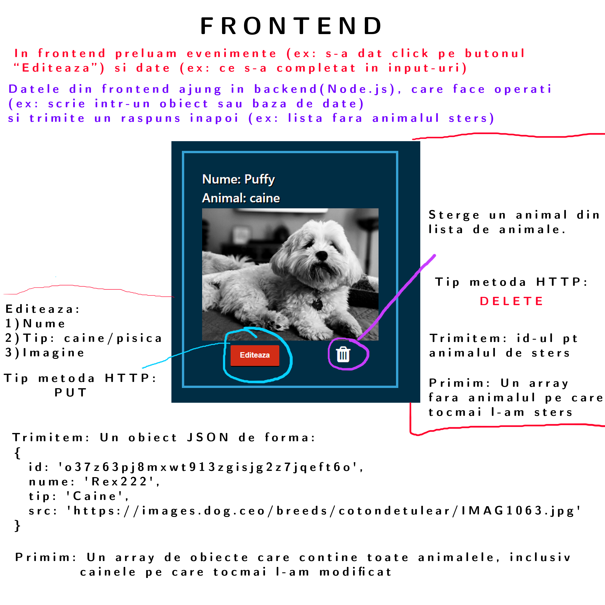
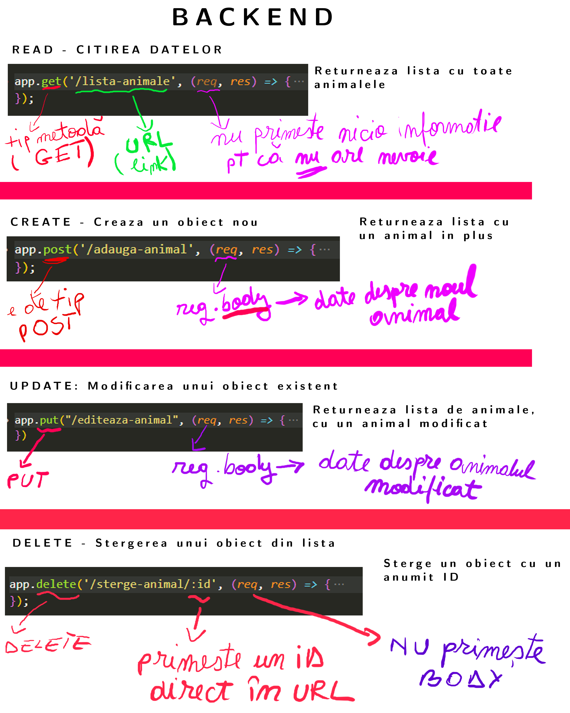
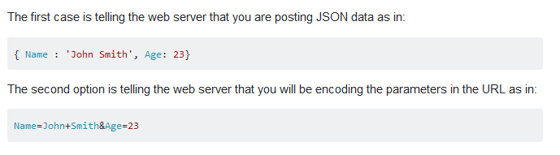

NodeJS
In acest laborator vom discuta despre:
- CRUD - Create, Read, Update, Delete
- Implementarea pentru Edit (create, read, update au fost deja acoperite in ultime;e video-uri)
- Scrierea si citirea intr-un fisier JSON - TODO
Codul sursa:
Codul actualizat este disponibil aiciFrontend
Este foarte important sa intelegem diferenta dintre frontend si backend. Ceea ce am facut in prima parte a laboratorului (HTML,CSS, chiar si Javascript) se incadreaza la frontend. Practic, interfata cu care interactioneaza direct utilizatorul este partea de frontend.
Initial, pentru frontend se folosea doar HTML. Ulterior au aparut CSS si Javascript. In ultimii ani au aparut numeroase framework-uri si librarii. (ex: React, Angular.js, Angular2+,Vue.js,Oracle JET,Backbone.JS etc). Asta inseamna ca si pentru partea de frontend lucrurile se complica destul de mult.
In primul laborator va spuneam cat de multe librarii, concepte sau tool-uri sunt folosite pentru programarea web. Semestrul acesta am reusit sa trecem printr-o parte din ele.(clar mai putin de jumate, dar cam cate puteam sa "inghesuim" in 3 luni)
Aici gasiti lista daca vreti sa vedeti ce am reusit sa bifam si ce mai trebuie sa invatati voi pana cand o sa va puteti considera experti intr-un domeniu.
Developer roadmap - link
Acum, haideti sa discutam despre aplicatia noastra cu adapstul de animale
Prin Javascript putem sa preluam anumite date(ex: ce animal vrem sa sterge). Intr-o aplicatie reala am transmite id-ul elementului pe care vrem sa-l stergem catre backend, iar backend-ul l-ar sterge din baza de date. Ca sa nu intram in baze de date (veti avea 2 materii speciale pentru asta in anii urmatori), vom sterge si vom scrie intr-un fisier JSON. Nu este o varianta pe care o vreti pentru o aplicatie reala (bazele de date ne ajuta sa facem validari, de exemplu ca nu exista mai multe elemente cu acelasi ID... si ne ajuta sa selectam datele mai rapid. De exemplu atunci cand avem zeci de mii de produse si vrem sa le obtinem doar pe cele dintr-un interval de pret)
Mai jos aveti evidentiate actiunile pentru aplicatia noastra (cele de UPDATE si DELETE)
Read se face la incarcarea paginii (ca sa luam lista initiala cu animale), iar create prin formularul din ultimul video
Comunicarea dintre FRONTEND si BACKEND
Comunicarea se face prin apeluri AJAX. Din frontend(javascript) trimitem date catre backend si asteptam sa primim un raspuns inapoi. Comunicare este ceva de forma:

- Event: Userul da click pe un buton sau completeaza un formular si apasa TRIMITE
- URL: trebuie sa-i spunem backend-ului(server) pe ce URL trimitem datele.In functie de URL are loc o logica diferita. Ex: atunci cand mergem pe /afieaza-animale serverul stie sa trimita toata lista de animale, iar atunci cand mergem pe /sterge-animal/:id serverul stie sa stearga animalul cu un anumit id
- Data: ce animal sa stearga, cum se numeste animalul dupa EDIT, datele pentru un animal nou creat etc. Informatiile vin din interfata grafica (frontend) si le putem transmite fie in URL(cum am facut la "stergere-anima"/:id), fie in BODY( daca avem de transmit mai multe informatii, de exemplu un obiect JSON de tip animal)
- Backend - codul de Node.js care comunica cu fisierul JSON sau cu o baza de date
- Dupa ce si-a terminat treaba (care poate dura ceva) serverul trimite inapoi un raspuns. Timpul in care primim un raspuns tine de viteza conexiunii la internet si de complexitatea cerintei. (una este cand avem 10 obiecte in baza de date si alta cand avem 5 milioane). Aici intervine video-ul despre "Ce este un promise?"
Aici gasiti un articol complet care face analogia dintre un restaurant si comunicarea FRONTEND-BACKEND:
Articol completBACKEND
Pe aplicatia noastra, lucrurile arata in felul urmator:
Observatie: Exista mai multe moduri in care putem trimite date catre backend. Cele mai folosite 2 variante sunt:
- Trimitem informatia in URL(ca la delete)
- Trimitem informatia in BODY ca JSON(ex: CREATE sau UPDATE)
In general atunci cand aveti de transmis mai multe informatii(de exemplu un obiect de tip animal sau un array) este mai comod sa folositi un JSON(dar nu va opreste nimeni sa trimiteti datele in URL). Vizual, cele 2 metode arata asa:
Cod pentru edit:
// pentru moment folosim un array definit pe backend.
// In viitor in locul lui vom scrie/citi intr-un fisier JSON
let animale = [
{
id: uid(32),
nume: "Rex",
tip: "caine",
src: "https://images.dog.ceo/breeds/cotondetulear/IMAG1063.jpg"
},
{
id: uid(32),
nume: "Puffy",
tip: "caine",
src: "https://images.dog.ceo/breeds/havanese/00100trPORTRAIT_00100_BURST20191030212452971_COVER.jpg"
},
{
id: uid(32),
nume: "Oliver",
tip: "caine",
src: "https://images.dog.ceo/breeds/sheepdog-english/n02105641_4975.jpg"
}
]
// Facem put pe URL-ul "/editeaza-animal"
// Trimitem un body informatiile despre animalul modificat(de exemplu noul nume sau noua imagine)
app.put("/editeaza-animal", (req, res) => {
const animalData = req.body;
console.log("Am primit pe body datele: ", animalData)
// findIndex ne da pozitia din array pentru elementul pe care vrem sa il modificam
let animalCurentIndex = animale.findIndex(animal => animal.id === animalData.id);
// din array-ul de animale modificam doar elementul pe care l-am editat in frontend
animale[animalCurentIndex] = animalData;
// returnam intreg array-ul de animale, cu tot cu animalul modificat.
res.send(animale);
})
Observam ca am folosit PUT pentru a edita un element. Este o conventie pe care e bine sa o respectam. Atunci cand alt programator vede ca facem un GET se asteapta ca noi doar sa primim date si cand facem un DELETE sa stergem ceva. Teoretic puteti la GET/POST/PUT sa stergeti date fara probleme, dar este contra-intuitiv
Pentru EDIT, pe partea de frontend trebuie sa facem 2 pasi:
- Obtinem datele despre noul animal (utilizatorul completeaza un formular cand apasa pe butonul de edit, iar noi preluam datele cu Javascript)
- Facem apelul AJAX catre server si asteptam un raspuns
// la click pe butonul de salveaza modificarile din modal/formular
// (vezi structura html din drive)
savleazaModificarile.addEventListener("click", async function () {
// luam valorile din input-uri folosind javascript
let nume = document.querySelector("#editeaza-nume").value;
let select = document.querySelector("#editeaza-tip");
const tip = select.options[select.selectedIndex].value;
let imagineAnimal = document.querySelector("#editeaza-imagine").value;
// creem un nou obiect de tip animal cu datele modificate de utilizator
const editedAnimal = {
"id": animalContainerID,
nume,
tip,
"src": imagineAnimal
}
// facem apelul ajax catre editeaza-animal (server) si ii trimitem datele
let URL = "http://localhost:3000/editeaza-animal/";
animaleArray = await editeazaAnimal(URL, editedAnimal);
// dupa ce am primit datele reafisam elementele in pagina
afiseazaAnimale2()
// 2. Apelul AJAX efectiv
// functia este async pentru ca avem apel AJAX si promise.
// fara async nu puteam face await
// data reprezinta obiectul editedAnimal obtinut anterior
// daca nu se trimite nimic, avem default un obiect gol {} ca sa evitam o eroare
// la fel pentru url; default ii punem un string vid; Nu se va face request-ul, dar nu crapa aplicatia
async function editeazaAnimal(url = '', data = {}) {
// Default options are marked with *
const response = await fetch(url, {
method: 'PUT', // *GET, POST, PUT, DELETE, etc.
headers: {
'Accept': 'application/json',
'Content-Type': 'application/json'
},
body: JSON.stringify(data)
});
return response.json();
}
})